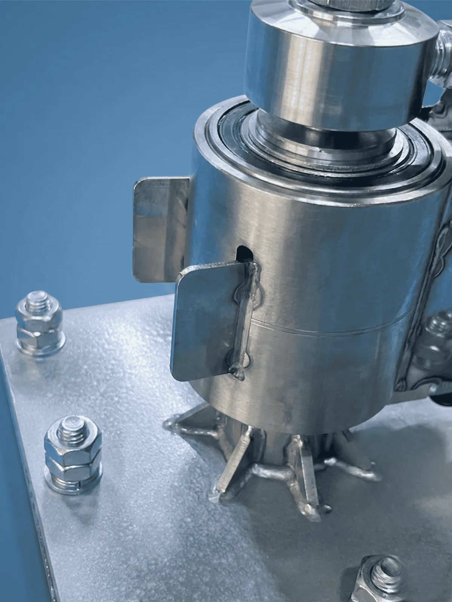

Tır Yıkama Pervanesi Boom
Teleskopik Açılır Kapanır Boom Kol ile Üstün Güvenlik
Büyük araçların temizliği için özel olarak tasarlanan tır yıkama pervanesi boom, yenilikçi teleskopik açılır kapanır boom kol sistemi sayesinde maksimum esneklik sunar. Tam açıldığında 3 metreye ulaşan, kapandığında ise 1.5 metreye düşen boom kol yapısı, tır, kamyon ve otobüs gibi farklı büyüklükteki araçlara mükemmel uyum sağlar.
Olası zorlanmalara karşı geliştirilen özel kopma emniyeti sayesinde hem aracın hem de boom sisteminin zarar görmesini engelleyen bu model, ağır vasıta yıkama istasyonlarının vazgeçilmez boom pervane çözümüdür.
Öne Çıkan Özellikler:
- Teleskopik Boom Kol: 1.5m - 3m arası ayarlanabilir boom arm uzunluğu.
- Güvenlik: Zorlanma ve takılma anında devreye giren profesyonel kopma emniyeti.
- Geniş Erişim: Tır ve kamyon gibi büyük araçlar için optimize edilmiş boom sistemi.
- Pratik Kullanım: Dar alanlarda kapanabilen, yıkama anında uzayan ergonomik boom tasarımı.
Kullanım Alanları
Tır yıkama istasyonları, kamyon yıkama tesisleri, otobüs bakım merkezleri ve tarım makineleri temizlik noktaları. Boom pervanesi sayesinde tek kişiyle büyük araçların tüm yüzeyine güvenle erişilir.
Doğru Ürünü Seçmene yardımcı olabiliriz
Model seçimi ve fiyat karşılaştırmasını tek merkezden görmek için aşağıdaki sayfalara geçin.